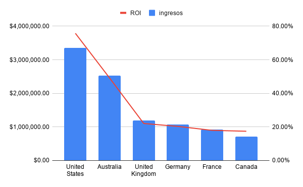

Proyectos
Adventure Works Financial Performance Analysis
SQL Finanzas ROIAnálisis del desempeño financiero de Adventure Works mediante ingresos, costos, campañas y ROI por país.
Se identificaron diferencias significativas en eficiencia de marketing entre regiones.

Mercado Libre Funnel & Retention Analysis
SQL Cohortes RetenciónAnálisis del embudo de conversión y retención de usuarios en e-commerce.
Se identificaron caídas en etapas del funnel que afectan la conversión final.

Retail Sales Performance Dashboard (Google Sheets)
BI KPIs Excel / SheetsDashboard con KPIs de ventas por departamento y eficiencia por metro cuadrado.
Se identificó concentración de ventas en pocos departamentos clave.

Walmart Sales Performance Analysis
SQL Retail Business AnalysisAnálisis del desempeño de ventas por categoría y región en un entorno retail tipo Walmart, evaluando patrones de consumo y eficiencia de productos.
Se identificaron categorías con mayor rentabilidad y oportunidades de optimización en inventario.

Urban Mobility & Economic Development Analysis
Python Pandas VisualizaciónAnálisis de congestión urbana y su relación con indicadores económicos.
Se observó correlación entre actividad económica y niveles de tráfico en ciudades.